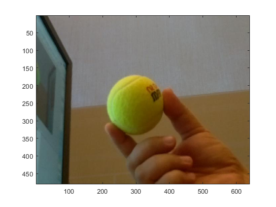
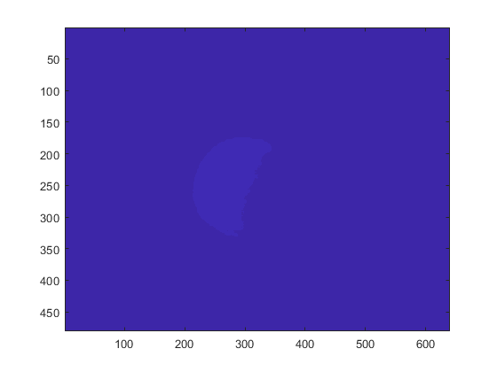
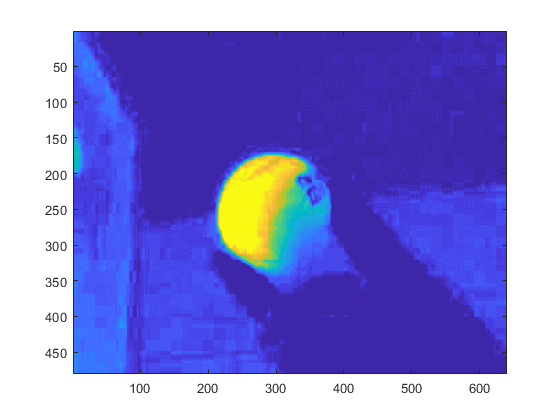

Tracking a Green Ball
This example shows you how to use MATLAB to process images captured from a Raspberry Pi Camera Board module to track a green ball.
Contents
Introduction
The Raspberry Pi Camera Board is a custom designed add-on module for Raspberry Pi hardware. The MATLAB Support Package for Raspberry Pi Hardware allows you to capture images from the Raspberry Pi Camera Board and bring those right into MATLAB for processing. Using this capability we will develop an ball tracking algorithm.
Prerequisites
- We recommend completing Working with Raspberry Pi Camera Board example.
Required Hardware
To run this example you will need the following hardware:
- Raspberry Pi hardware
- A power supply with at least 1A output
- A Camera Board
Create a Camera Board object
Create a camera board object by executing the following on the MATLAB prompt.
clear cam clear rpi rpi = raspi(); cam = cameraboard(rpi, 'Resolution', '640x480');
The cam is a handle to a cameraboard object. Let's display the images captured from Raspberry Pi Camera Board in MATLAB.
for i = 1:100 img = snapshot(cam); image(img); drawnow; end
Extract color components
We will extract three 2D matrices from the 3D image data corresponding to the red, green, and blue components of the image. Before proceeding with the rest of the example, we will load a saved image. We will make sure our algorithm works on the test image before moving on to live data.
img = imread('tennis_ball.jpg');
image(img);
r = img(:,:,1);
g = img(:,:,2);
b = img(:,:,3);
 Calculate green
Next we approximate the intensity of the green component
justGreen = g - r/2 - b/2;
Threshold the green image
We threshold the image to find the regions of image that we consider to be green enough.
bw = justGreen > 40; image(bw);
Find center
Find the center of the image and mark it with a red dot.
[x, y] = find(bw); if ~isempty(x) && ~isempty(y) xm = round(mean(x)); ym = round(mean(y)); xx = max(1, xm-5):min(xm+5, size(bw, 1)); yy = max(1, ym-5):min(ym+5, size(bw, 2)); bwbw = zeros(size(bw), 'uint8'); bwbw(xx, yy) = 255; end image(justGreen + bwbw);
Run detection algorithm on live data
We can create a MATLAB function, trackball.m, out of the MATLAB code we developed in the previous sections of this example. View the MATLAB function in the editor.
edit('trackball.m');
The function trackball() takes an image and a threshold for green detection and returns the results of green detection algorithm. We will call this function on the images captured in a loop. Before running the MATLAB code snippet below, get hold of a tennis ball and place it in the view of the Raspberry Pi Camera Board. While the MATLAB code is running, move the ball around.
figure(1); for i = 1:200 [img, bw] = trackball(snapshot(cam), 40); subplot(211); image(img); subplot(212); image(bw); drawnow; end
Summary
This example introduced the an application example where images coming from Raspberry Pi Camera Board are processed with a simple green detection algorithm. This algorithm has subsequently been used to track a tennis ball.